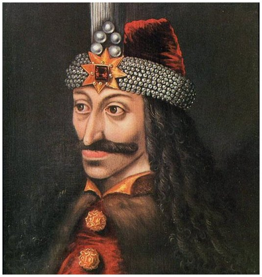

Cinematic Effects
for the Web
Hi, I'mRazvan Caliman
I come fromRomania
Țuica
Nadia Comăneci
Dracula

Vlad "Dracul"
Effects with CSS
- Box properties
- Rotation 2D/3D
- Opacity
- Colors
- Transition & Animate